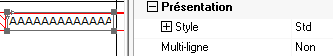
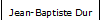
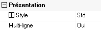
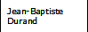

Dans un masque Xwin, tout objet est délimité par une "boîte". Si le contenu de l'objet est plus large que la boîte, il est tronqué à l'impression.
Définition de la propriété multi-ligne
Un objet ayant la propriété "Multi-ligne" est autorisé à s'imprimer sur deux ou plusieurs lignes si son contenu déborde de la boîte dessinée dans Xwin. Cette propriété est disponible pour les objets Texte, Champ et Multi-choix. Elle permet par exemple de rétrécir une colonne de tableau sans perte d’information.
La hauteur finale de l'objet imprimé dépend donc de son contenu. Si nécessaire, la boîte est agrandie en hauteur de manière à ce que le contenu, éclaté sur plusieurs lignes, soit intégralement imprimé. La hauteur de la boîte n'est jamais diminuée et sa largeur reste inchangée.
Exemple :




Répercussion sur les autres objets du bloc
Un objet multi-ligne peut être placé dans n'importe quel type de bloc. Toutefois, la répercussion de l’extension de la boîte sur les autres objets diffère selon le type du bloc :
Bloc de type Mobile ou Tableau.
Ymig décale vers le bas tous les objets du bloc situés strictement derrière l’objet étendu (i.e. dont l'ordonnée début est strictement supérieure à l'ordonnée fin de l’objet multi-ligne). Le cas échéant, le bloc est lui-même étendu en hauteur (d'un multiple de la hauteur d'une ligne).
Si le bloc Mobile contient un objet Tableau, le traitement est adapté de la manière suivante :
Le bloc n'est jamais étendu en hauteur mais l'extension est compensée par une diminution de la hauteur du tableau.
Si des objets multi-ligne placés dans l’en-tête du tableau sont étendus, l'en-tête est agrandie et la hauteur du tableau diminuée d'autant.
Remarque :
Cette diminution de la hauteur du tableau vient en supplément d'une éventuelle réduction due à un manque de place dans la page imprimée (voir la rubrique Tableau et bloc mobile de hauteur variable).
Attention :
La hauteur du tableau n'est pas réduite en dessous d'une certaine limite, égale à la hauteur de l'en-tête augmentée de celle du plus petit des blocs Tableau. De plus, le bloc n'étant pas agrandi quand la hauteur du tableau devient insuffisante pour absorber la totalité des extensions, les débordements subsistants liés aux objets multi-ligne seront ignorés et les objets concernés déborderont du bloc à l'impression.
Bloc de type Fixe ou Fond.
Ymig n’effectue aucun décalage automatique des autres objets. Pour éviter d'éventuels chevauchements d’objets, le dessin du masque doit laisser, derrière l’objet multi-ligne, un espace vide disponible pour étendre la boîte.
Remarque : D’éventuels cadres verticaux dessinés aux côtés de l’objet ne sont pas automatiquement agrandis pour "suivre" l'extension de la boîte. Cette restriction ne concerne normalement pas les blocs de type Tableau, pour lesquels le cadre vertical est lié au tableau.
Algorithme de décalage des objets
Un objet multi-ligne étendu décale potentiellement tous les objets situés strictement derrière lui. Toutefois, le décalage n’est pas systématique et n’est pas obligatoirement égal à l’extension de l’objet multi-ligne. En effet, les espaces entre objets sont d'abord rognés (sans descendre en dessous de 2 orteils) avant de procéder au décalage.
L’algorithme est appliqué de proche en proche et de bas en haut.
Il analyse tous les objets du bloc triés par ordonnées croissantes. Lorsqu’il rencontre un objet multi-ligne qui s’étend en hauteur, il décale s’il y a lieu tous les objets placés derrière lui. Il passe alors à l’objet suivant et recommence.
En final, le nombre de lignes du bloc mobile (sans objet Tableau) est aussi augmenté si un objet décalé ou agrandi déborde effectivement du bloc d'origine. Si le bloc mobile contient un tableau, le débordement est compensé par une réduction de la hauteur du tableau.
Voir aussi : Les tableaux.